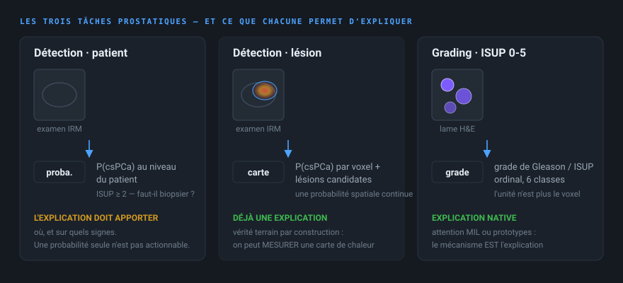
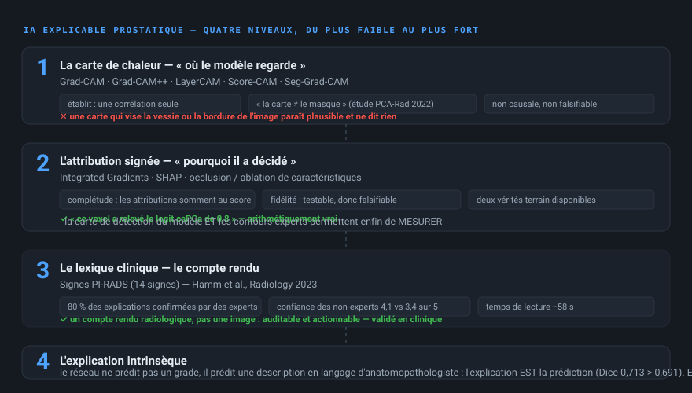

1 Vue d'ensemble
Chaque entrée ci-dessous a été vérifiée sur sources primaires : l'API REST GitHub, un git ls-tree sans blobs de chaque dépôt, des sondes HTTP de fichiers bruts qui rapportent les tailles réelles en octets, l'API REST Zenodo, et la récupération directe des portails de jeux de données, des pages de défis et des pages d'accueil d'articles. Les dépôts dont le README contredit le contenu sont signalés plutôt que crus sur parole.
git clone sans git-lfs récupère des pointeurs de 134 octets au lieu de fichiers de 127 Mo — et l'inférence échoue silencieusement. Vérifiez git lfs pull avant de conclure à un « modèle sans poids ».
Les trois tâches prostatiques
- Détection au niveau du patient
- Le patient a-t-il un cancer cliniquement significatif (csPCa, ISUP ≥ 2) ? Sortie = une probabilité. C'est la métrique principale de PI-CAI.
- Détection au niveau de la lésion
- Où se trouve la lésion, et quelle est sa probabilité ? Sortie = une carte de détection voxel à voxel. C'est ce qui rend la VRAI MÉTHODE de prédiction du modèle.
- Grading (ISUP 0-5)
- À quel grade de Gleason / ISUP correspond la lésion ? Sortie = un grade ordinal. Le PANDA et le GLEASON 2019RELèvent de cette tâche, sur histologie.
LePI-CAI mesure les deux premiers niveaux simultanément. C'est une particularité : vous pouvez donc valider une carte de chaleur contre la carte de détection du modèle ET contre les contours experts.
Les deux modalités, deux mondes
- IRM (bpMRI) — T2W, ADC, DWI. Volume 3D. Détection de csPCa. C'est le monde du radiologue, avec PI-RADS comme vocabulaire.
- Histopathologie (H&E) — lames entières géantes, patchs 256×256. Grading de Gleason. C'est le monde de l'anatomopathologiste, avec les patterns de Gleason comme vocabulaire.
Les deux mondes ont leur propre réponse à l'explicabilité : côté IRM, la carte de chaleur et les signes PI-RADS ; côté histologie, l'attention MIL et les prototypes, qui sont natifs et ne nécessitent aucune méthode post-hoc.

assets/task-taxonomy.svg2 Solution recommandée
Avantages
Limites
Les trois voies, côte à côte
Top 5 des modèles, classés
Classement établi sur la facilité de réutilisation, la qualité du modèle, la disponibilité des poids, la disponibilité du code, la qualité du jeu de données, l'explicabilité, la reproductibilité, le coût computationnel, l'adéquation à un projet étudiant et la qualité de la documentation.
3 Modèles
Les filtres agissent sur les champs structurés. « Poids » indique si des fichiers de point de contrôle ont réellement été localisés — pas ce qu'un README affirme.
4 Méthodes d'IA explicable

assets/xai-levels.svg« Où le modèle regarde » vs « pourquoi il a décidé »
Ce sont des affirmations différentes, et la prostate fournit un contre-exemple frappant à la confusion la plus fréquente.
Où il regarde — Grad-CAM, LayerCAM, Score-CAM, cartes d'attention, Seg-Grad-CAM. Ces méthodes établissent une corrélation entre une région et la sortie. Elles ne prouvent pas que le modèle a utilisé cette région.
Et l'article prostate le dit explicitement, ce qui est la citation à retenir : « les cartes Grad-CAM décrivent la localisation de l'attention du CNN, alors que la segmentation CNN ne considère que l'activation de classe résultante, qui peut provenir de n'importe où dans le champ réceptif » (étude de corrélation à l'histologie macroscopique, 2022). Autrement dit : une carte de chaleur et un masque ne disent pas la même chose, même quand ils se recouvrent partiellement. C'est la nuance conceptuelle la plus importante de tout ce dossier.
Pourquoi il a décidé — Integrated Gradients, SHAP, DeepLIFT, LIME, occlusion. Ces méthodes décomposent le score. Deux propriétés doivent être vérifiées : la complétude (les attributions somment à la différence de score — garantie par IG et SHAP, pas par Grad-CAM) et la fidélité (supprimer la zone mise en évidence change-t-elle la prédiction ?).
Ici, la fidélité est testable à un niveau de rigueur : le modèle PI-CAI de référence produit une carte de détection continue, et 1 295 cas portent des contours de lésion d'expert. Vous avez donc deux vérités terrain indépendantes pour la même image. C'est un luxe que l'imagerie cérébrale n'offre pas.
Le niveau supérieur, propre à la prostate — les signes PI-RADS. Hamm et al. ont démontré qu'un modèle peut écrire sa justification comme un compte rendu radiologique (« hypo-intensité T2, restriction de diffusion, absence de plan antéropostérieur »), et que des experts confirment 80 % de ces explications. C'est un compte rendu, pas une image : donc auditable et actionnable.
La recommandation honnête : montrez les trois. Une carte Grad-CAM pour le clinicien, une attribution Integrated Gradients pour le relecteur, et les signes PI-RADS pour le compte rendu. Un modèle de la prostate qui n'explique qu'en pixels n'a pas fait le travail.
Contraintes pratiques
- Le 3D est la contrainte n°1. L'entrée PI-CAI est volumique. L'occlusion et DeepLIFT sur un volume 3D sont lents ; le KernelSHAP sur une WSI est hors de question (l'attention MIL prend le relais).
- Git LFS fait échouer les poids silencieusement. Vérifiez
git lfs pullet la taille réelle du fichier (127 229 381 octets pour un pli). - La licence des données est CC BY-NC 4.0. Usage NON COMMERCIAL uniquement. C'est la contrainte structurante du projet, à la différence de l'équivalent cérébral où BRISC est en CC BY.
- PROSTATEx est déprécié. La TCIA le déclare remplacé par PI-CAI, dont il contient les 328 cas de ProstateX. Utiliser les deux crée un chevauchement de patients.
- Le score chute en population de dépistage. PI-CAI (population de suspicion) donne ~0,88 d'AUROC ; une cohorte de dépistage (G2) ne donne plus que 0,83. Tout chiffre doit être rapporté avec sa population.
- Les faux positifs sont le vrai problème. Les systèmes de détection de lésions prostatiques atteignent 70-75 % de sensibilité mais 35-48 % de PPV, avec ~1,4 à 1,9 faux positif par patient. C'est ce qu'une explication honnête doit mettre en évidence, pas masquer.
5 Jeux de données
Nombre d'examens, nombre de patients et nombre de lames sont tenus séparés. Quand les sources divergent, le conflit est signalé plutôt que résolu arbitrairement.
| Jeu de données | Type | Examens / lames | Patients | Classes | Masques | Accès | Licence | Recommandé |
|---|
6 Articles
7 Comparaison
Une ligne par solution réutilisable. Cliquez sur un en-tête de colonne pour trier. Utilisez le champ de texte pour filtrer toutes les colonnes.
| Solution | Tâche | Modèle | Jeu de données | XAI | Performance | Code | Poids | Licence | Difficulté de réutilisation | Recommandation |
|---|
8 Architecture proposée du projet
Pourquoi cette forme
- La sortie du modèle EST une carte de détection continue. L'explication n'est donc pas une image ajoutée à côté de la prédiction : c'est la prédiction, lisible comme une probabilité spatiale. C'est une propriété rare et très contraignante.
- La couche PI-RADS est le prolongement naturel du travail de Hamm et al. (Radiology 2023), et les scores PI-RADS sont désormais publiés pour les 1 500 cas de PI-CAI, ce qui la rend réalisable sans annotation supplémentaire.
- Le bloc d'évaluation est la contribution : LocAcc contre la carte de détection et contre les contours experts, plus la fidélité par suppression. C'est ce qui distingue une démonstration d'une étude.
9 Sources
Chaque affirmation importante de ce dossier remonte à l'une d'entre elles. Aucun lien n'est inventé ; tous ont été récupérés et confirmés pendant la recherche.
Registre de vérification
Ordre de confiance des sources utilisé partout
- Source officielle du jeu de données (TCIA, IDC, Zenodo, Kaggle, page du défi)
- Article original
- Dépôt officiel des auteurs de l'article
- Documentation officielle (grand-challenge.org, model zoo MONAI, documentation des bibliothèques)
- PubMed / arXiv / PMC
- Dépôts GitHub d'autres chercheurs
- Kaggle
- Blogs et articles
Quand deux sources divergent, le conflit est rapporté dans l'entrée plutôt que résolu arbitrairement.